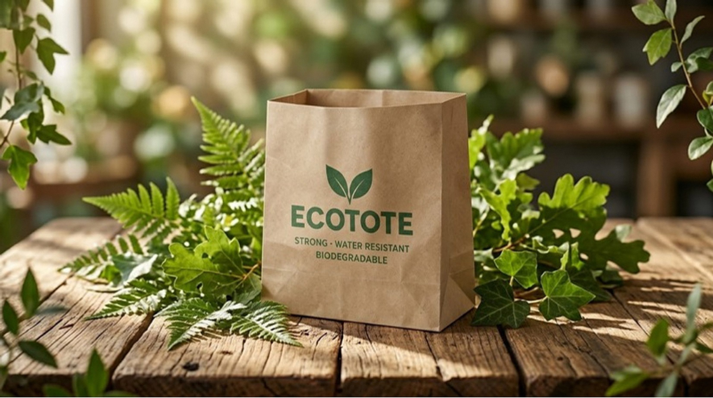
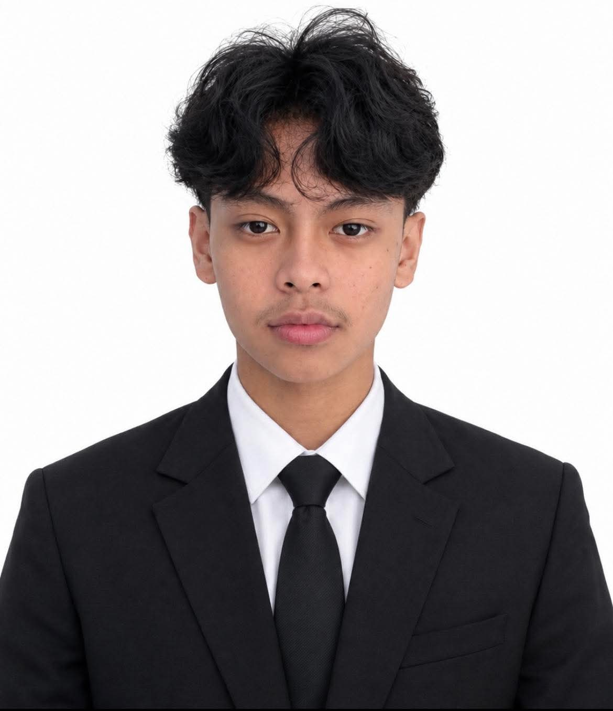

Recycled paper base
A sustainable foundation that cuts reliance on plastic.
Scroll down
A sustainable foundation that cuts reliance on plastic.
Reinforcement for better strength.
Improved water resistance.
Designed to return to the earth.

EcoTote is an eco-friendly alternative to conventional plastic bags. It is made using recycled paper, cotton fibers, and a beeswax coating to create a more sustainable and reusable bag.
The project aims to address the growing problem of plastic pollution by providing an alternative to single-use plastic bags, which contribute to long-term environmental damage. EcoTote promotes the reuse of materials that would otherwise be discarded, giving them a new purpose while encouraging more responsible consumption and waste management.
Five layers, each doing one job. Tap a layer to see what it does.
“Small changes can add up to a greener future.”
Team EcoToteRead the full research, from methods to test results.
The student researchers behind EcoTote.

Behind EcoTote is a team of dedicated and passionate student researchers working together toward a common goal: creating a sustainable alternative to conventional plastic bags.
Throughout this research, each member contributes their ideas, skills, and efforts to the development of EcoTote. From gathering information and conducting experiments to evaluating its durability, water resistance, and environmental impact, we work collaboratively to ensure that our product meets its purpose.
More than just completing a research project, we aim to demonstrate how creativity, teamwork, and innovation can turn simple recycled materials into something useful and meaningful.
Together, we are committed to making small changes that can contribute to a greener and more sustainable future.
To develop and evaluate EcoTote, a recycled paper bag reinforced with cotton fibers and coated with beeswax, in terms of load-bearing capacity, water resistance, and degredability.
This study contributes to the body of knowledge on sustainable bag alternatives by providing data-driven insights on the performance of recycled paper bags. It can serve as a reference for future studies, innovation, and the development of improved, eco-friendly materials.
Findings can guide consumers towards making responsible choices by understanding the practicality, durability, and environmental considerations of using recycled paper bags over conventional plastic bags.
Results can help vendors assess the viability of adopting recycled paper bags in their daily operations, supporting cost-effective and sustainable practices that align with consumer demand and environmental care.
The study promotes awareness and dialogue on reducing plastic waste and encourages collective action toward more sustainable lifestyles and waste-reduction initiatives.